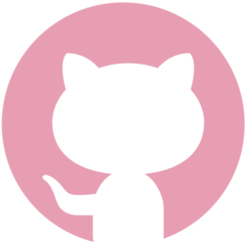
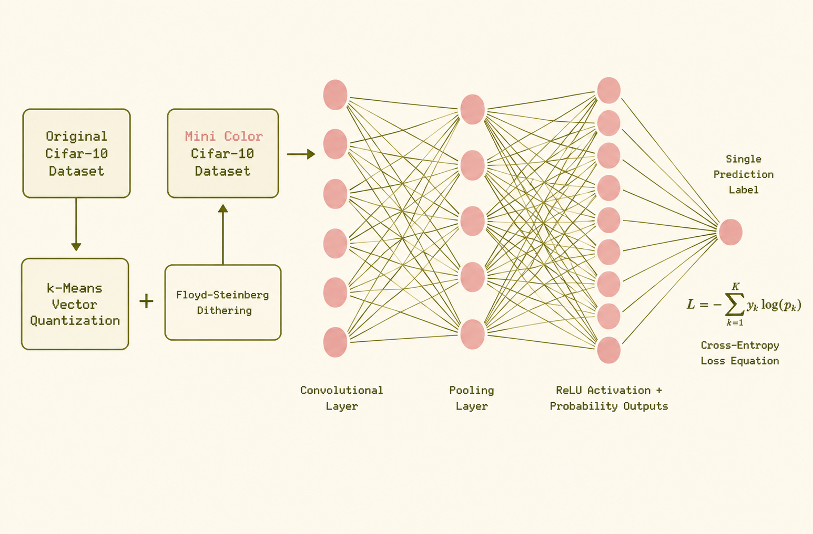

A news highlighter for skimmers. Paste in an article link, tell Glint what you care
about, and it highlights the most relevant sentences right in the original text. Jump between
highlights, then read more around any one of them when you want context.
Split checks, not friendships! bill splitting app for group dinners, roommate groceries,
vacations, and more. split a bill evenly or by item, track who paid, and see exactly who owes who.
paying back has never been easier.
year
2026
lang
TypeScript
status
in progress

Currently unavailable on Github

mini color nn
Mini bags, mini gadgets, mini this, mini that… now meet the mini CIFAR-10 dataset.
Who knew 60,000 images could be so byte-sized!
Some of my work isn't shown here. Code I wrote during internships belongs to those
organizations.
recommendations
Greg RousonNoblis
She took immediate ownership of the project, demonstrating a rare level
of autonomy and initiative. … This combination of teamwork and technical execution culminated in
an impressive final presentation to Noblis senior leadership. Sophia is a driven, highly capable
professional who will be an immediate
asset to any organization she joins.
Shelby BrownSmithsonian
Using ArcGIS, JavaScript, HTML, and CSS, she created a user-friendly
map that allows volunteers to easily locate and identify optimal sampling docks across the
Chesapeake Bay area. Her project facilitated the engagement of over 160 sampling stations,
and thanks to her work, we immediately observed a significant uptick in volunteer
participation.